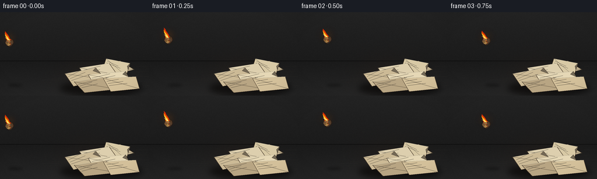
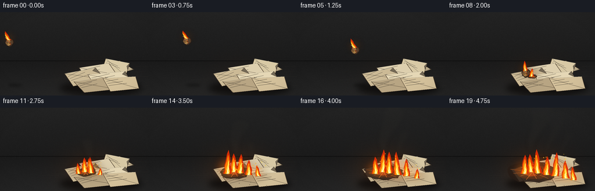
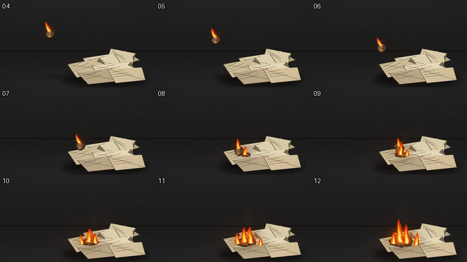

CODING AGENTS AS PIXEL WORLD MODELS
traex/GPT-5.6-Sol · phygen_141
点击播放 · 原生 RGB 像素
逐轮保存的候选
回放视频、检查图与代码变化。
每份候选均可单独播放。实际图片检查记录在下方工具轨迹中。
候选 01播放与检查图
点击播放 · 原生 RGB 像素


展开代码变化
--- 上一保存版本
+++ 本次保存版本
@@ -0,0 +1,290 @@
+from pathlib import Path
+import math, json
+import numpy as np
+from PIL import Image, ImageDraw, ImageFilter
+import artifact_io
+
+CASE_DIR = Path(__file__).resolve().parent
+spec = json.loads((CASE_DIR / "task_spec.json").read_text())
+W, H, N = spec["width"], spec["height"], spec["frames"]
+S = 3
+SW, SH = W*S, H*S
+
+def sc(v): return int(round(v*S))
+def pts(poly): return [(sc(x), sc(y)) for x,y in poly]
+
+def rgba_layer(): return Image.new("RGBA", (SW,SH), (0,0,0,0))
+
+def ellipse(draw, box, fill, outline=None, width=1):
+ draw.ellipse(tuple(sc(v) for v in box), fill=fill, outline=outline, width=sc(width))
+
+def polygon(draw, p, fill, outline=None, width=1):
+ draw.polygon(pts(p), fill=fill)
+ if outline:
+ draw.line(pts(p+[p[0]]), fill=outline, width=sc(width), joint="curve")
+
+def line(draw, p, fill, width=1):
+ draw.line(pts(p), fill=fill, width=max(1,sc(width)), joint="curve")
+
+def add_smoke(im, f, sources):
+ # Soft coherent smoke plumes, behind the flames.
+ lay = rgba_layer(); d = ImageDraw.Draw(lay, "RGBA")
+ for si,(sx,sy,strength,age0) in enumerate(sources):
+ age=max(0.0, f-age0)
+ if age <= 0: continue
+ count=int(3+age*0.9)
+ for j in range(count):
+ a=j*0.74 + age*0.40 + si*1.3
+ rise=j*7.5 + age*2.3
+ drift=math.sin(a*0.75)*5 + j*1.2 + (si%2)*2
+ x=sx+drift
+ y=sy-rise
+ r=(4.2+j*1.35)*strength
+ alpha=int(max(7, 45-j*3.2)*min(1,age/2.0)*strength)
+ col=(49+min(30,j*2),45+min(26,j*2),42+min(20,j),alpha)
+ ellipse(d,(x-r*1.15,y-r*0.65,x+r*1.15,y+r*0.65),col)
+ lay=lay.filter(ImageFilter.GaussianBlur(sc(3.7)))
+ return Image.alpha_composite(im,lay)
+
+def flame_shape(draw, x, base, w, h, seed, colors=None, lean=0):
+ """Three nested, wind-bent flame tongues."""
+ rng=np.random.default_rng(seed)
+ if colors is None:
+ colors=[(220,45,5,245),(255,129,5,250),(255,225,70,255),(255,249,191,255)]
+ def tongue(scale_w, scale_h, col, yoff=0, shift=0):
+ ww=w*scale_w; hh=h*scale_h
+ levels=7
+ left=[]; right=[]
+ for k in range(levels):
+ q=k/(levels-1)
+ cy=base-yoff-hh*q
+ taper=(1-q)**0.65
+ center=x + lean*q + math.sin(seed*0.41+k*1.9)*w*0.07*taper + shift
+ jitter=(rng.random()-.5)*ww*0.10*taper
+ left.append((center-ww*0.50*taper+jitter,cy))
+ right.append((center+ww*0.50*taper+jitter,cy))
+ polygon(draw,left+right[::-1],col)
+ tongue(1.0,1.0,colors[0])
+ tongue(.68,.79,colors[1],0, -w*.04)
+ tongue(.38,.57,colors[2],0, w*.02)
+ if h>9: tongue(.16,.31,colors[3],0,w*.02)
+
+def draw_fire(im, f, flames):
+ # Wide bloom before sharp flame bodies.
+ glow=rgba_layer(); gd=ImageDraw.Draw(glow,"RGBA")
+ for i,(x,b,w,h,lean) in enumerate(flames):
+ ellipse(gd,(x-w*1.5,b-h*.72,x+w*1.5,b+h*.25),(255,79,0,75))
+ ellipse(gd,(x-w*.75,b-h*.45,x+w*.75,b+h*.08),(255,188,25,70))
+ glow=glow.filter(ImageFilter.GaussianBlur(sc(7)))
+ im=Image.alpha_composite(im,glow)
+ lay=rgba_layer(); d=ImageDraw.Draw(lay,"RGBA")
+ for i,(x,b,w,h,lean) in enumerate(flames):
+ flame_shape(d,x,b,w,h,9000+f*97+i*131,lean=lean)
+ return Image.alpha_composite(im,lay)
+
+def crumple_ball(im, cx, cy, f, airborne=True):
+ # blurred shadow is separate and grounded below projectile
+ lay=rgba_layer(); d=ImageDraw.Draw(lay,"RGBA")
+ rng=np.random.default_rng(501)
+ rad=7.4
+ p=[]
+ for k in range(18):
+ a=2*math.pi*k/18
+ rr=rad*(.87+.17*rng.random())
+ p.append((cx+rr*math.cos(a),cy+rr*math.sin(a)))
+ polygon(d,p,(67,48,35,255),(33,27,24,255),1)
+ # paper facets, ash-black perimeter, glowing creases
+ facets=[([(-5,-3),(0,-6),(2,-1),(-1,1)],(151,117,75,255)),
+ ([(2,-1),(5,-4),(6,2),(2,4)],(89,66,47,255)),
+ ([(-5,-3),(-1,1),(-4,5),(-7,1)],(113,84,57,255)),
+ ([(-1,1),(2,4),(-1,6),(-4,5)],(177,134,76,255))]
+ for fp,c in facets:
+ polygon(d,[(cx+x,cy+y) for x,y in fp],c)
+ line(d,[(cx-4,cy-3),(cx,cy-1),(cx+2,cy+4)],(251,88,16,230),.65)
+ line(d,[(cx-5,cy+2),(cx-1,cy+1)],(255,173,33,220),.55)
+ return Image.alpha_composite(im,lay)
+
+# Fixed dry-paper heap geometry: back to front.
+papers=[
+ ([(164,93),(206,84),(230,99),(192,109)], (194,178,145), 0),
+ ([(182,80),(223,88),(216,110),(176,99)], (216,201,165), 1),
+ ([(136,96),(187,88),(201,108),(149,115)], (221,207,174), 2),
+ ([(111,106),(164,96),(181,116),(126,128)], (204,186,150), 3),
+ ([(151,108),(215,102),(225,121),(166,132)], (229,215,181), 4),
+ ([(127,120),(181,112),(202,133),(145,139)], (184,165,131), 5),
+ ([(177,114),(233,111),(239,132),(190,137)], (211,192,154), 6),
+]
+
+def draw_paper_heap(im,f):
+ # contact shadow
+ shadow=rgba_layer(); sd=ImageDraw.Draw(shadow,"RGBA")
+ ellipse(sd,(103,119,244,143),(8,6,5,180))
+ shadow=shadow.filter(ImageFilter.GaussianBlur(sc(5)))
+ im=Image.alpha_composite(im,shadow)
+ lay=rgba_layer(); d=ImageDraw.Draw(lay,"RGBA")
+ for pi,(poly,c,_) in enumerate(papers):
+ polygon(d,poly,(*c,255),(72,58,42,255),.7)
+ # offset inner sheet rim gives layered thickness
+ line(d,[poly[0],poly[1]],(246,235,202,180),.55)
+ # folds and sparse printed marks make each object unmistakably paper
+ p0,p1,p2,p3=poly
+ mx=(p0[0]+p2[0])/2; my=(p0[1]+p2[1])/2
+ line(d,[p0,(mx,my),p2],(126,107,78,95),.38)
+ for j in range(3):
+ u=.23+j*.16
+ ax=p0[0]*(1-u)+p3[0]*u; ay=p0[1]*(1-u)+p3[1]*u
+ bx=p1[0]*(1-u)+p2[0]*u; by=p1[1]*(1-u)+p2[1]*u
+ bx=ax+(bx-ax)*(.43+.11*((pi+j)%3))
+ line(d,[(ax+3,ay),(bx,by)],(83,76,64,92),.35)
+ # little dog-ear / curled corner
+ if pi in (1,3,4):
+ corner=[poly[1],((poly[1][0]+poly[2][0])*.5,(poly[1][1]+poly[2][1])*.5),
+ (poly[1][0]-5,poly[1][1]+5)]
+ polygon(d,corner,(173,156,125,150),(91,75,52,120),.35)
+ im=Image.alpha_composite(im,lay)
+ # Progressive char bloom from the burning ball's landing point.
+ burn=max(0,f-7)
+ if burn>0:
+ char=rgba_layer(); cd=ImageDraw.Draw(char,"RGBA")
+ rng=np.random.default_rng(610+f)
+ cx,cy=148,111
+ r=4.0+burn*2.45
+ for ring,(fac,col) in enumerate([(1.0,(39,29,23,225)),(.72,(74,38,20,230)),(.42,(173,54,10,220))]):
+ pp=[]
+ for k in range(24):
+ a=2*math.pi*k/24
+ rr=r*fac*(.83+.20*rng.random())
+ pp.append((cx+rr*math.cos(a)*1.35,cy+rr*math.sin(a)*.58))
+ polygon(cd,pp,col)
+ # glowing torn cracks advancing through paper fibers
+ for j in range(min(9,burn+2)):
+ a=-.25+j*.53
+ length=r*(.6+.35*((j*7)%5)/5)
+ x2=cx+math.cos(a)*length*1.35; y2=cy+math.sin(a)*length*.52
+ line(cd,[(cx,cy),(x2,y2)],(255,107,16,180),.55)
+ im=Image.alpha_composite(im,char)
+ return im
+
+def ball_position(f):
+ if f<=7:
+ x=16+16.6*f
+ # clean ballistic arc then rapid descent to contact
+ y=52 - 6.2*f + 1.78*f*f
+ return x,y
+ seq=[(137,105),(145,101),(151,107),(155,108),(158,109)]
+ return seq[min(f-8,len(seq)-1)]
+
+def make_frame(f):
+ # Cinematic charcoal workshop floor/background, with subtle fixed grain.
+ yy,xx=np.mgrid[0:SH,0:SW]
+ y=yy/S; x=xx/S
+ rng=np.random.default_rng(42)
+ noise=rng.normal(0,1.8,(SH,SW))
+ wall=np.zeros((SH,SW,4),dtype=np.uint8)
+ horizon=84
+ top=np.clip(35-0.095*y,19,38)
+ floor=np.clip(26+0.18*(y-horizon),22,39)
+ base=np.where(y<horizon,top,floor)
+ # warm local bounce light increases after ignition
+ burn=max(0,f-7)
+ intensity=.15 + min(1,burn/8)*.9
+ dist=((x-157)/68)**2+((y-109)/47)**2
+ warm=np.exp(-dist*2.0)*intensity
+ wall[...,0]=np.clip(base+noise+34*warm,0,255)
+ wall[...,1]=np.clip(base+noise+12*warm,0,255)
+ wall[...,2]=np.clip(base+noise-3*warm,0,255)
+ wall[...,3]=255
+ im=Image.fromarray(wall,"RGBA")
+ # horizon seam, floor scratches, vignette
+ detail=rgba_layer(); d=ImageDraw.Draw(detail,"RGBA")
+ line(d,[(0,horizon),(256,horizon)],(6,6,6,160),1)
+ for j in range(20):
+ rr=np.random.default_rng(200+j)
+ x0=float(rr.uniform(0,256)); y0=float(rr.uniform(91,143)); ln=float(rr.uniform(5,34))
+ line(d,[(x0,y0),(x0+ln,y0+float(rr.uniform(-1,1)))],(117,101,82,int(rr.uniform(10,28))),.35)
+ # soft vignette
+ vig=rgba_layer(); vd=ImageDraw.Draw(vig,"RGBA")
+ vd.rectangle((0,0,SW,SH),fill=(0,0,0,0))
+ im=Image.alpha_composite(im,detail)
+
+ bx,by=ball_position(f)
+ # airborne ball casts moving soft shadow on floor
+ sh=rgba_layer(); sd=ImageDraw.Draw(sh,"RGBA")
+ height=max(0,103-by)
+ shadow_x=bx+height*.20
+ sw=7+height*.11
+ ellipse(sd,(shadow_x-sw,126-sw*.15,shadow_x+sw,126+sw*.15),(0,0,0,int(120-height*.65)))
+ sh=sh.filter(ImageFilter.GaussianBlur(sc(2.4)))
+ im=Image.alpha_composite(im,sh)
+
+ # Main smoke behind papers/fire. Ball emits a short diagonal wake while airborne.
+ sources=[]
+ if f>=8: sources=[(148,105,1.0,7.0),(174,109,.75,10.0),(198,112,.65,13.0)]
+ im=add_smoke(im,f,sources)
+ if f<8:
+ trail=rgba_layer(); td=ImageDraw.Draw(trail,"RGBA")
+ for j in range(1,5):
+ px=bx-j*5.2; py=by-j*1.1
+ r=2+j*.65
+ ellipse(td,(px-r,py-r*.7,px+r,py+r*.7),(56,52,48,max(5,40-j*7)))
+ trail=trail.filter(ImageFilter.GaussianBlur(sc(2.1)))
+ im=Image.alpha_composite(im,trail)
+
+ im=draw_paper_heap(im,f)
+ # Ball sits in front of/top of the papers and visibly persists after impact.
+ im=crumple_ball(im,bx,by,f,f<8)
+
+ # Flame on projectile: wind-bent backward in flight, then begins ignition.
+ ball_h=15 + 2.0*math.sin(f*1.8)
+ ball_fl=[(bx-1,by-4,7.5,ball_h,-6.5 if f<8 else -1.5)]
+ im=draw_fire(im,f,ball_fl)
+
+ burn=max(0,f-7)
+ pile_fl=[]
+ if burn>0:
+ # Spread outward from contact over dry sheets, with staged ignition.
+ sites=[(146,111,0),(157,113,1),(135,114,2),(172,116,3),(188,118,5),(205,122,7),(219,125,9)]
+ for i,(px,base,delay) in enumerate(sites):
+ age=burn-delay
+ if age>0:
+ growth=min(1.0,age/5.0)
+ w=6.0+7.5*growth
+ h=(9+31*growth)*(0.88+0.15*math.sin(f*1.61+i*2.2))
+ lean=math.sin(f*.9+i)*2.5
+ pile_fl.append((px,base,w,h,lean))
+ im=draw_fire(im,f,pile_fl)
+
+ # Sparks/embers lift upward after impact.
+ if burn>1:
+ sparks=rgba_layer(); sd=ImageDraw.Draw(sparks,"RGBA")
+ for j in range(min(25,3+burn*2)):
+ rr=np.random.default_rng(2000+j)
+ born=j%max(2,burn)
+ age=burn-born
+ sx=145+float(rr.uniform(-12,65))*min(1,burn/8)
+ sy=112-float(rr.uniform(2,8))-age*float(rr.uniform(1.2,3.0))
+ sx+=math.sin(f*.7+j)*2
+ r=float(rr.uniform(.35,.8))
+ ellipse(sd,(sx-r,sy-r,sx+r,sy+r),(255,149+int(rr.uniform(0,80)),35,200))
+ im=Image.alpha_composite(im,sparks)
+
+ # sparse foreground ash flecks at late times
+ if burn>6:
+ ash=rgba_layer(); ad=ImageDraw.Draw(ash,"RGBA")
+ for j in range(9):
+ rr=np.random.default_rng(3300+j)
+ ax=125+rr.uniform(0,105); ay=126+rr.uniform(0,13)
+ ellipse(ad,(ax,ay,ax+rr.uniform(.5,1.3),ay+rr.uniform(.3,.7)),(22,19,17,170))
+ im=Image.alpha_composite(im,ash)
+
+ # Cinematic vignette using alpha mask.
+ v=((x-W/2)/(W*.70))**2+((y-H/2)/(H*.76))**2
+ va=np.clip((v-.42)*42,0,75).astype(np.uint8)
+ dark=np.zeros((SH,SW,4),dtype=np.uint8); dark[...,3]=va
+ im=Image.alpha_composite(im,Image.fromarray(dark,"RGBA"))
+ im=im.convert("RGB").resize((W,H),Image.Resampling.LANCZOS)
+ return np.asarray(im,dtype=np.uint8)
+
+frames=np.stack([make_frame(f) for f in range(N)])
+artifact_io.save(frames, CASE_DIR)
+print(f"saved {frames.shape} RGB frames to {CASE_DIR}")
可观测工具轨迹
实际执行的命令与返回图片。
命令 1exit 0
/bin/bash -lc "ls -la && printf '\\n--- prompt.txt ---\\n' && cat prompt.txt && printf '\\n--- GENERATION_RULES.md ---\\n' && cat GENERATION_RULES.md && printf '\\n--- task_spec.json ---\\n' && cat task_spec.json"
命令 2exit 0
/bin/bash -lc "sed -n '1,240p' artifact_io.py"
命令 3exit 0
/bin/bash -lc "cat > generate.py <<'PY'
from pathlib import Path
import math, json
import numpy as np
from PIL import Image, ImageDraw, ImageFilter
import artifact_io
CASE_DIR = Path(__file__).resolve().parent
spec = json.loads((CASE_DIR / \"task_spec.json\").read_text())
W, H, N = spec[\"width\"], spec[\"height\"], spec[\"frames\"]
S = 3
SW, SH = W*S, H*S
def sc(v): return int(round(v*S))
def pts(poly): return [(sc(x), sc(y)) for x,y in poly]
def rgba_layer(): return Image.new(\"RGBA\", (SW,SH), (0,0,0,0))
def ellipse(draw, box, fill, outline=None, width=1):
draw.ellipse(tuple(sc(v) for v in box), fill=fill, outline=outline, width=sc(width))
def polygon(draw, p, fill, outline=None, width=1):
draw.polygon(pts(p), fill=fill)
if outline:
draw.line(pts(p+[p[0]]), fill=outline, width=sc(width), joint=\"curve\")
def line(draw, p, fill, width=1):
draw.line(pts(p), fill=fill, width=max(1,sc(width)), joint=\"curve\")
def add_smoke(im, f, sources):
# Soft coherent smoke plumes, behind the flames.
lay = rgba_layer(); d = ImageDraw.Draw(lay, \"RGBA\")
for si,(sx,sy,strength,age0) in enumerate(sources):
age=max(0.0, f-age0)
if age <= 0: continue
count=int(3+age*0.9)
for j in range(count):
a=j*0.74 + age*0.40 + si*1.3
rise=j*7.5 + age*2.3
drift=math.sin(a*0.75)*5 + j*1.2 + (si%2)*2
x=sx+drift
y=sy-rise
r=(4.2+j*1.35)*strength
alpha=int(max(7, 45-j*3.2)*min(1,age/2.0)*strength)
col=(49+min(30,j*2),45+min(26,j*2),42+min(20,j),alpha)
ellipse(d,(x-r*1.15,y-r*0.65,x+r*1.15,y+r*0.65),col)
lay=lay.filter(ImageFilter.GaussianBlur(sc(3.7)))
return Image.alpha_composite(im,lay)
def flame_shape(draw, x, base, w, h, seed, colors=None, lean=0):
\"\"\"Three nested, wind-bent flame tongues.\"\"\"
rng=np.random.default_rng(seed)
if colors is None:
colors=[(220,45,5,245),(255,129,5,250),(255,225,70,255),(255,249,191,255)]
def tongue(scale_w, scale_h, col, yoff=0, shift=0):
ww=w*scale_w; hh=h*scale_h
levels=7
left=[]; right=[]
for k in range(levels):
q=k/(levels-1)
cy=base-yoff-hh*q
taper=(1-q)**0.65
center=x + lean*q + math.sin(seed*0.41+k*1.9)*w*0.07*taper + shift
jitter=(rng.random()-.5)*ww*0.10*taper
left.append((center-ww*0.50*taper+jitter,cy))
right.append((center+ww*0.50*taper+jitter,cy))
polygon(draw,left+right[::-1],col)
tongue(1.0,1.0,colors[0])
tongue(.68,.79,colors[1],0, -w*.04)
tongue(.38,.57,colors[2],0, w*.02)
if h>9: tongue(.16,.31,colors[3],0,w*.02)
def draw_fire(im, f, flames):
# Wide bloom before sharp flame bodies.
glow=rgba_layer(); gd=ImageDraw.Draw(glow,\"RGBA\")
for i,(x,b,w,h,lean) in enumerate(flames):
ellipse(gd,(x-w*1.5,b-h*.72,x+w*1.5,b+h*.25),(255,79,0,75))
ellipse(gd,(x-w*.75,b-h*.45,x+w*.75,b+h*.08),(255,188,25,70))
glow=glow.filter(ImageFilter.GaussianBlur(sc(7)))
im=Image.alpha_composite(im,glow)
lay=rgba_layer(); d=ImageDraw.Draw(lay,\"RGBA\")
for i,(x,b,w,h,lean) in enumerate(flames):
flame_shape(d,x,b,w,h,9000+f*97+i*131,lean=lean)
return Image.alpha_composite(im,lay)
def crumple_ball(im, cx, cy, f, airborne=True):
# blurred shadow is separate and grounded below projectile
lay=rgba_layer(); d=ImageDraw.Draw(lay,\"RGBA\")
rng=np.random.default_rng(501)
rad=7.4
p=[]
for k in range(18):
a=2*math.pi*k/18
rr=rad*(.87+.17*rng.random())
p.append((cx+rr*math.cos(a),cy+rr*math.sin(a)))
polygon(d,p,(67,48,35,255),(33,27,24,255),1)
# paper facets, ash-black perimeter, glowing creases
facets=[([(-5,-3),(0,-6),(2,-1),(-1,1)],(151,117,75,255)),
([(2,-1),(5,-4),(6,2),(2,4)],(89,66,47,255)),
([(-5,-3),(-1,1),(-4,5),(-7,1)],(113,84,57,255)),
([(-1,1),(2,4),(-1,6),(-4,5)],(177,134,76,255))]
for fp,c in facets:
polygon(d,[(cx+x,cy+y) for x,y in fp],c)
line(d,[(cx-4,cy-3),(cx,cy-1),(cx+2,cy+4)],(251,88,16,230),.65)
line(d,[(cx-5,cy+2),(cx-1,cy+1)],(255,173,33,220),.55)
return Image.alpha_composite(im,lay)
# Fixed dry-paper heap geometry: back to front.
papers=[
([(164,93),(206,84),(230,99),(192,109)], (194,178,145), 0),
([(182,80),(223,88),(216,110),(176,99)], (216,201,165), 1),
([(136,96),(187,88),(201,108),(149,115)], (221,207,174), 2),
([(111,106),(164,96),(181,116),(126,128)], (204,186,150), 3),
([(151,108),(215,102),(225,121),(166,132)], (229,215,181), 4),
([(127,120),(181,112),(202,133),(145,139)], (184,165,131), 5),
([(177,114),(233,111),(239,132),(190,137)], (211,192,154), 6),
]
def draw_paper_heap(im,f):
# contact shadow
shadow=rgba_layer(); sd=ImageDraw.Draw(shadow,\"RGBA\")
ellipse(sd,(103,119,244,143),(8,6,5,180))
shadow=shadow.filter(ImageFilter.GaussianBlur(sc(5)))
im=Image.alpha_composite(im,shadow)
lay=rgba_layer(); d=ImageDraw.Draw(lay,\"RGBA\")
for pi,(poly,c,_) in enumerate(papers):
polygon(d,poly,(*c,255),(72,58,42,255),.7)
# offset inner sheet rim gives layered thickness
line(d,[poly[0],poly[1]],(246,235,202,180),.55)
# folds and sparse printed marks make each object unmistakably paper
p0,p1,p2,p3=poly
mx=(p0[0]+p2[0])/2; my=(p0[1]+p2[1])/2
line(d,[p0,(mx,my),p2],(126,107,78,95),.38)
for j in range(3):
u=.23+j*.16
ax=p0[0]*(1-u)+p3[0]*u; ay=p0[1]*(1-u)+p3[1]*u
bx=p1[0]*(1-u)+p2[0]*u; by=p1[1]*(1-u)+p2[1]*u
bx=ax+(bx-ax)*(.43+.11*((pi+j)%3))
line(d,[(ax+3,ay),(bx,by)],(83,76,64,92),.35)
# little dog-ear / curled corner
if pi in (1,3,4):
corner=[poly[1],((poly[1][0]+poly[2][0])*.5,(poly[1][1]+poly[2][1])*.5),
(poly[1][0]-5,poly[1][1]+5)]
polygon(d,corner,(173,156,125,150),(91,75,52,120),.35)
im=Image.alpha_composite(im,lay)
# Progressive char bloom from the burning ball's landing point.
burn=max(0,f-7)
if burn>0:
char=rgba_layer(); cd=ImageDraw.Draw(char,\"RGBA\")
rng=np.random.default_rng(610+f)
cx,cy=148,111
r=4.0+burn*2.45
for ring,(fac,col) in enumerate([(1.0,(39,29,23,225)),(.72,(74,38,20,230)),(.42,(173,54,10,220))]):
pp=[]
for k in range(24):
a=2*math.pi*k/24
rr=r*fac*(.83+.20*rng.random())
pp.append((cx+rr*math.cos(a)*1.35,cy+rr*math.sin(a)*.58))
polygon(cd,pp,col)
# glowing torn cracks advancing through paper fibers
for j in range(min(9,burn+2)):
a=-.25+j*.53
length=r*(.6+.35*((j*7)%5)/5)
x2=cx+math.cos(a)*length*1.35; y2=cy+math.sin(a)*length*.52
line(cd,[(cx,cy),(x2,y2)],(255,107,16,180),.55)
im=Image.alpha_composite(im,char)
return im
def ball_position(f):
if f<=7:
x=16+16.6*f
# clean ballistic arc then rapid descent to contact
y=52 - 6.2*f + 1.78*f*f
return x,y
seq=[(137,105),(145,101),(151,107),(155,108),(158,109)]
return seq[min(f-8,len(seq)-1)]
def make_frame(f):
# Cinematic charcoal workshop floor/background, with subtle fixed grain.
yy,xx=np.mgrid[0:SH,0:SW]
y=yy/S; x=xx/S
rng=np.random.default_rng(42)
noise=rng.normal(0,1.8,(SH,SW))
wall=np.zeros((SH,SW,4),dtype=np.uint8)
horizon=84
top=np.clip(35-0.095*y,19,38)
floor=np.clip(26+0.18*(y-horizon),22,39)
base=np.where(y<horizon,top,floor)
# warm local bounce light increases after ignition
burn=max(0,f-7)
intensity=.15 + min(1,burn/8)*.9
dist=((x-157)/68)**2+((y-109)/47)**2
warm=np.exp(-dist*2.0)*intensity
wall[...,0]=np.clip(base+noise+34*warm,0,255)
wall[...,1]=np.clip(base+noise+12*warm,0,255)
wall[...,2]=np.clip(base+noise-3*warm,0,255)
wall[...,3]=255
im=Image.fromarray(wall,\"RGBA\")
# horizon seam, floor scratches, vignette
detail=rgba_layer(); d=ImageDraw.Draw(detail,\"RGBA\")
line(d,[(0,horizon),(256,horizon)],(6,6,6,160),1)
for j in range(20):
rr=np.random.default_rng(200+j)
x0=float(rr.uniform(0,256)); y0=float(rr.uniform(91,143)); ln=float(rr.uniform(5,34))
line(d,[(x0,y0),(x0+ln,y0+float(rr.uniform(-1,1)))],(117,101,82,int(rr.uniform(10,28))),.35)
# soft vignette
vig=rgba_layer(); vd=ImageDraw.Draw(vig,\"RGBA\")
vd.rectangle((0,0,SW,SH),fill=(0,0,0,0))
im=Image.alpha_composite(im,detail)
bx,by=ball_position(f)
# airborne ball casts moving soft shadow on floor
sh=rgba_layer(); sd=ImageDraw.Draw(sh,\"RGBA\")
height=max(0,103-by)
shadow_x=bx+height*.20
sw=7+height*.11
ellipse(sd,(shadow_x-sw,126-sw*.15,shadow_x+sw,126+sw*.15),(0,0,0,int(120-height*.65)))
sh=sh.filter(ImageFilter.GaussianBlur(sc(2.4)))
im=Image.alpha_composite(im,sh)
# Main smoke behind papers/fire. Ball emits a short diagonal wake while airborne.
sources=[]
if f>=8: sources=[(148,105,1.0,7.0),(174,109,.75,10.0),(198,112,.65,13.0)]
im=add_smoke(im,f,sources)
if f<8:
trail=rgba_layer(); td=ImageDraw.Draw(trail,\"RGBA\")
for j in range(1,5):
px=bx-j*5.2; py=by-j*1.1
r=2+j*.65
ellipse(td,(px-r,py-r*.7,px+r,py+r*.7),(56,52,48,max(5,40-j*7)))
trail=trail.filter(ImageFilter.GaussianBlur(sc(2.1)))
im=Image.alpha_composite(im,trail)
im=draw_paper_heap(im,f)
# Ball sits in front of/top of the papers and visibly persists after impact.
im=crumple_ball(im,bx,by,f,f<8)
# Flame on projectile: wind-bent backward in flight, then begins ignition.
ball_h=15 + 2.0*math.sin(f*1.8)
ball_fl=[(bx-1,by-4,7.5,ball_h,-6.5 if f<8 else -1.5)]
im=draw_fire(im,f,ball_fl)
burn=max(0,f-7)
pile_fl=[]
if burn>0:
# Spread outward from contact over dry sheets, with staged ignition.
sites=[(146,111,0),(157,113,1),(135,114,2),(172,116,3),(188,118,5),(205,122,7),(219,125,9)]
for i,(px,base,delay) in enumerate(sites):
age=burn-delay
if age>0:
growth=min(1.0,age/5.0)
w=6.0+7.5*growth
h=(9+31*growth)*(0.88+0.15*math.sin(f*1.61+i*2.2))
lean=math.sin(f*.9+i)*2.5
pile_fl.append((px,base,w,h,lean))
im=draw_fire(im,f,pile_fl)
# Sparks/embers lift upward after impact.
if burn>1:
sparks=rgba_layer(); sd=ImageDraw.Draw(sparks,\"RGBA\")
for j in range(min(25,3+burn*2)):
rr=np.random.default_rng(2000+j)
born=j%max(2,burn)
age=burn-born
sx=145+float(rr.uniform(-12,65))*min(1,burn/8)
sy=112-float(rr.uniform(2,8))-age*float(rr.uniform(1.2,3.0))
sx+=math.sin(f*.7+j)*2
r=float(rr.uniform(.35,.8))
ellipse(sd,(sx-r,sy-r,sx+r,sy+r),(255,149+int(rr.uniform(0,80)),35,200))
im=Image.alpha_composite(im,sparks)
# sparse foreground ash flecks at late times
if burn>6:
ash=rgba_layer(); ad=ImageDraw.Draw(ash,\"RGBA\")
for j in range(9):
rr=np.random.default_rng(3300+j)
ax=125+rr.uniform(0,105); ay=126+rr.uniform(0,13)
ellipse(ad,(ax,ay,ax+rr.uniform(.5,1.3),ay+rr.uniform(.3,.7)),(22,19,17,170))
im=Image.alpha_composite(im,ash)
# Cinematic vignette using alpha mask.
v=((x-W/2)/(W*.70))**2+((y-H/2)/(H*.76))**2
va=np.clip((v-.42)*42,0,75).astype(np.uint8)
dark=np.zeros((SH,SW,4),dtype=np.uint8); dark[...,3]=va
im=Image.alpha_composite(im,Image.fromarray(dark,\"RGBA\"))
im=im.convert(\"RGB\").resize((W,H),Image.Resampling.LANCZOS)
return np.asarray(im,dtype=np.uint8)
frames=np.stack([make_frame(f) for f in range(N)])
artifact_io.save(frames, CASE_DIR)
print(f\"saved {frames.shape} RGB frames to {CASE_DIR}\")
PY
python generate.py"命令 4exit 0
/bin/bash -lc "python - <<'PY'
from PIL import Image, ImageDraw
from pathlib import Path
p=Path('.')
ids=list(range(4,13))
W,H=256,144
out=Image.new('RGB',(W*3,H*3),(0,0,0)); d=ImageDraw.Draw(out)
for k,i in enumerate(ids):
im=Image.open(p/'frames'/f'{i:02d}.png').convert('RGB')
out.paste(im,((k%3)*W,(k//3)*H)); d.text(((k%3)*W+4,(k//3)*H+4),f'{i:02d}',fill='white',stroke_width=1,stroke_fill='black')
out.save('impact_check.png')
PY
python - <<'PY'
import numpy as np, json
from pathlib import Path
p=Path('.')
z=np.load('pixels.npz')['pixels']
s=json.loads(Path('task_spec.json').read_text())
print('pixels',z.shape,z.dtype,'frames',len(list(Path('frames').glob('*.png'))))
print('artifacts',[(x.name,x.stat().st_size) for x in [Path('pixels.npz'),Path('index.html'),Path('inspection.png')]])
PY"视觉工具实际返回图片 1

视觉工具实际返回图片 2

视觉工具实际返回图片 3

保存候选 1 份；完成命令 4 次；可验证图片返回 3 张。原始 API 响应与完整日志保留在本地。